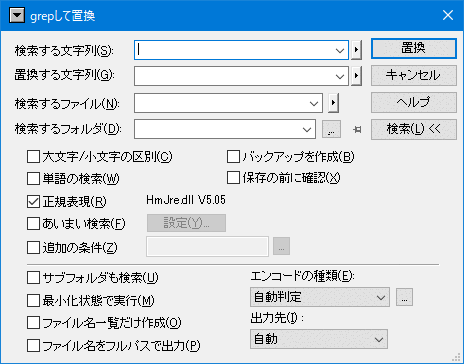
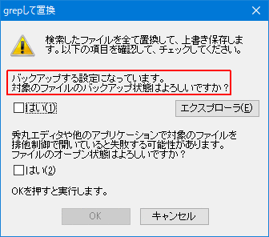

「grepして置換」はgrepを実行して、マッチ箇所を置換し上書き保存します。
設定次第では、バックアップを取らずに上書き保存してしまうこともあるので、注意が必要です。 (通常の置換と違い、「やり直し」で戻すことはできません)
基本的な使い方(オプション等)は、「grep」と同じなので、そちらを参照してください。
grepと比較し、以下の箇所が異なります。
「置換」と同じく、「検索する文字列」と「置換する文字列」は、複数行を入力可能にできます。詳細は「置換」-「補足」を参照してください。

「バックアップを作成」チェックボックス:
置換しファイルを上書きする場合、バックアップファイルを作成するかどうかを設定します。
「保存の前に確認」チェックボックス:
置換しファイルを上書きする場合、問い合わせダイアログを表示するかどうかを設定します。

「検索」ボタン:
通常のgrepダイアログに切り替わります。
「置換」ボタン:
ボタンを押すと、以下のダイアログが表示されます。
(最初のメッセージは、オプションの設定により替わる。画像は「バックアップを作成」がONの場合)

各種確認(チェックボックスをON)後、「OK」を押すと実際に検索/置換が始まります。
結果として以下のような内容が表示されます。置換した箇所にタグジャンプも可能です。
2_grepreplace.md(1):
2_grepreplace.md(7):
----------------
2 個のファイルを検索しました。
1 個のファイルを全て置換して、上書き保存しました。
2 個の置換を行ないました。